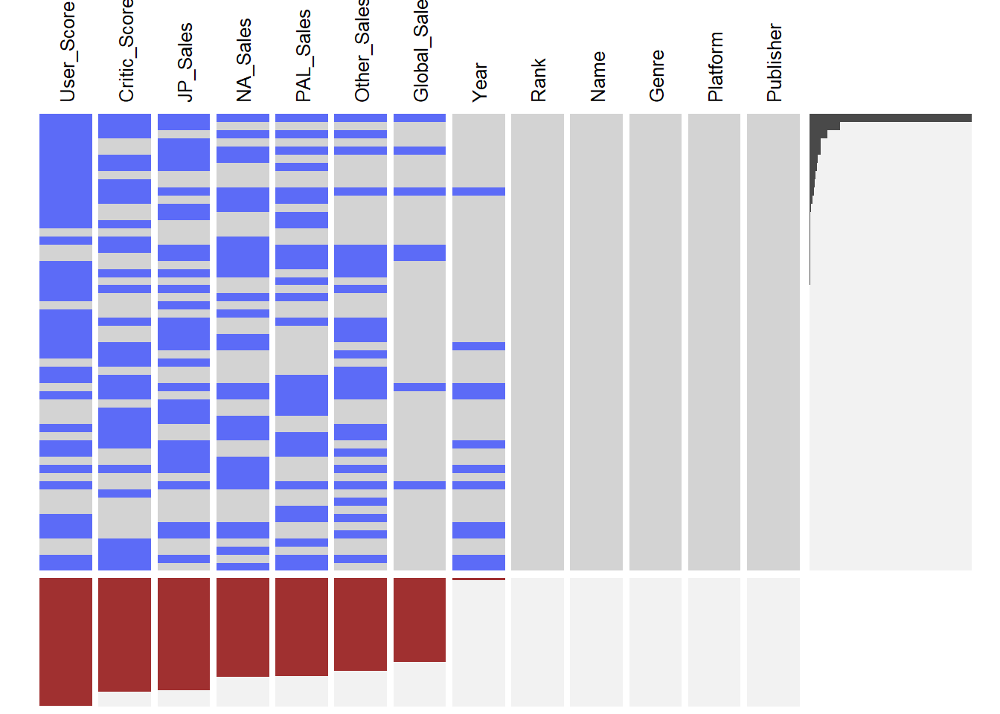
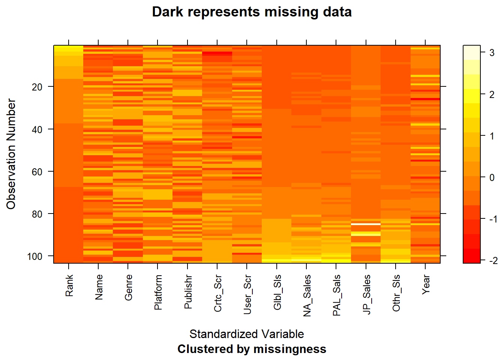

Chapter 4 Missing values
4.1 Missing data Count
We can see the total number of NAs in each column for the dataset:
## Rank Name Genre Platform Publisher Critic_Score
## 0 0 0 0 0 49256
## User_Score Global_Sales NA_Sales PAL_Sales JP_Sales Other_Sales
## 55457 36377 42828 42603 48749 40270
## Year
## 9794.2 Visualizing Missing data in dataset

The blue represents missing values. The rows show a missing pattern and the columns represent the column level missing values.
We can find out that the column “rank”,“name”,“genre”,“platform”, and “publisher” do not have missing values at all. However, there is a substaintial amount of data missing values for user score, critic score, and sales for all regions. In addition, the column “user score” has most missing values compared to other variables.
4.3 Deleting NAs
We use na.omit to delete the rows with missing values and check the updated dataset with graph.

Black area represents missing values. Since there is no dark area, our data is now practicable and usable after using na.omit().